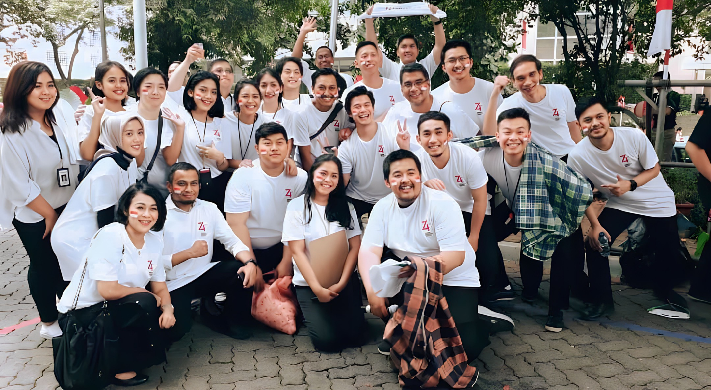

Data Analyst at Bahana Sekuritas
About Bahana Sekuritas
Bahana Sekuritas, an experienced and actively engaged firm, has been involved in nearly all major landmark deals in Indonesia. These transactions encompass those initiated by the Government of the Republic of Indonesia, State-Owned Enterprises (BUMN), domestic private companies, multinational corporations, and foreign companies alike. Bahana Sekuritas stands as a national securities firm with an excellent reputation, as evidenced by its numerous international accolades, including recognition as the "Best IPO," "Best Equity," and "The Best Investment Banking." It has received various other awards from renowned foreign media outlets such as Alpha Southeast Asia, Finance Asia, The Assets, Asiamoney, and Euromoney.
Main Contributions
- Performed as Project Manager to manage end-to-end development for Mutual Funds features on Bahana DXTrade apps & websites
- Performed various Data Analysis to build personalized and data-driven marketing strategy
- Improved dashboards for Customer Analytics using Tableau
- Conducted regular Sentiment Analysis to monitor and manage Apps Reviews on Google Playstore and Appstore, utilizing data-driven insights.
- Expertly extracted diverse data from various sources, leveraging Python for comprehensive Competitor Analytics.
- Contributed significantly to the development and management of digital content and social media strategies.